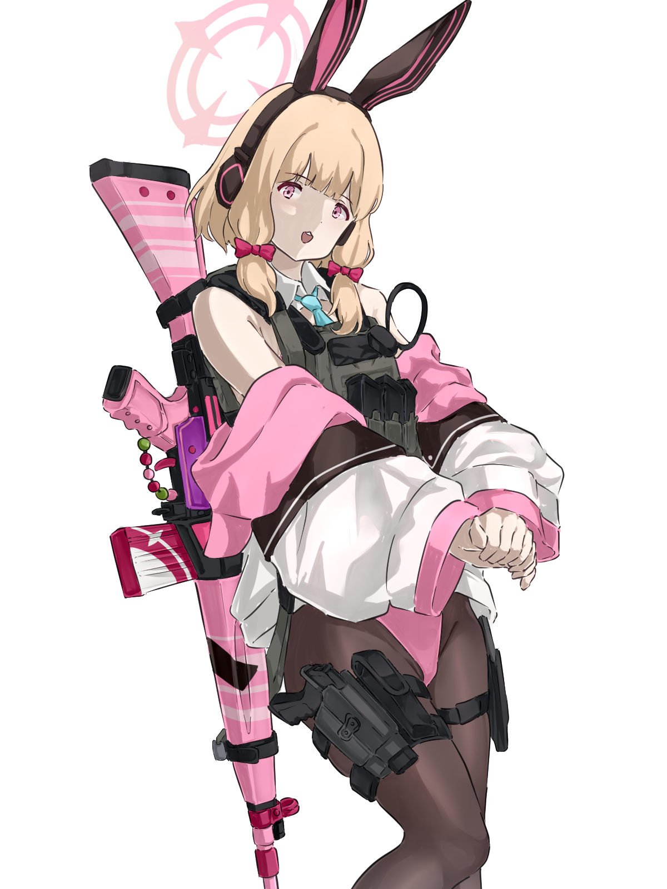

Información personal
Elian Webster Cabarcas
Quinto Semestre

Información relevante
Deporte favorito: Esports
Equipo Favorito: G2
G2 Es una organización de origen español dedicada a los deportes electrónicos fundada en 2014 por Carlos "Ocelote" Rodríguez Santiago y con sede en Berlín, Alemania. La organización compite en diversos videojuegos.
Jugadores Estelares

G2 Hans Sama

G2 Caps